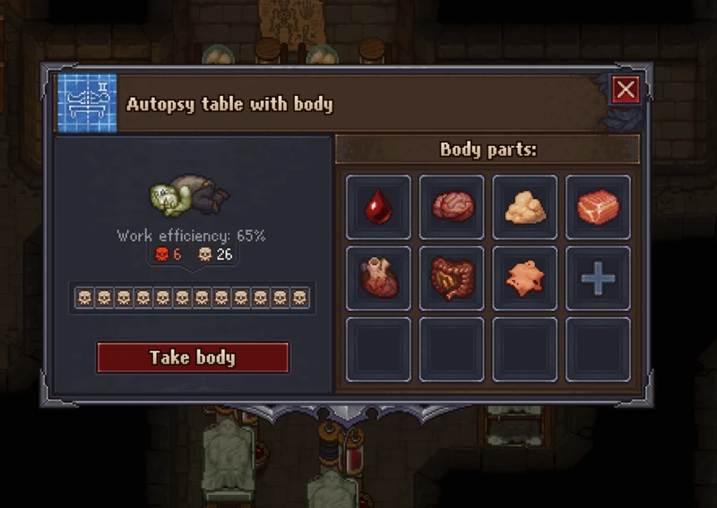

Zombie
Making a  zombie can be unlocked relatively early in the game by completing a series of short missions and unlocking the right technologies. You first have to meet Gunter and take his advice.
zombie can be unlocked relatively early in the game by completing a series of short missions and unlocking the right technologies. You first have to meet Gunter and take his advice.
Gunter and Zombies were added in the Breaking Dead DLC and become available past midnight of the fourth  (19.5 days)
(19.5 days)
Zombie Workstations
Most of the stations need to be unlocked by technology. There is also one quest where you need to install a zombie as a greeter for the Talking Skull tavern (Stranger sins DLC).
| Wood | Ore | Stone / Marble | Crops | Alchemy | Other |
|---|---|---|---|---|---|
| Sawmill (Felling site) | Ore mine | Stone quarry | Farm | Random text generator | Porter station |
| Circular saw* | Wooden anvil* | Marble quarry | Vinyard | Alchemy decomposer | Crate factory* |
| Carpenter's workbench* | Anvil* | Stone cutter* | Brewery | Alchemy workbench | Potter's wheel* |
| Carpenter's workbench II* | Anvil II* | Stone cutter II* | Winery | Jewelry table* | |
| Chopping spot* | |||||
| Sawhorse* |
* These stations can be operated by both a zombie or the player.
The downsides are that you will not get any Technology points from the working zombies. To counter that you can:
- Let zombies write point books at the Random text generator
- Buy books from the Astrologer
- Research graveyard items or advanced tools
- Use
 Circumspect to increase points for research
Circumspect to increase points for research
Creating a zombie
Zombies are made on a resurrection table with a  corpse, 1×
corpse, 1×
zombie juice, and 10×
Faith. To put a zombie to work, carry it to a work station and place it where prompted.  have no effect on zombies, and
have no effect on zombies, and  can be added to zombies later.
can be added to zombies later.
Zombie juice is crafted at an alchemy workbench (tier I). Constructing this requires two advanced conical flasks, which in turn require unlocking Glass-blower II and Advanced Smelting for  150
150  50
50  50. These prerequisites pose a significant barrier in the early game. In the meantime, 3×
50. These prerequisites pose a significant barrier in the early game. In the meantime, 3×
zombie juice can be found in Gunter’s cell.
Dispose a zombie
It is possible to throw zombies into the river or bury them in the graveyard to dispose of subpar or not needed zombies. It is advisable to remove all  before doing so. Zombies get no penalty from
before doing so. Zombies get no penalty from  but a grave does.
but a grave does.
Improving a zombie
Zombies have a stat called "Work Efficiency" that represents how effective their work generally is. This stat directly relates to the number of  skulls, while
skulls, while  skulls will have no effect. A zombie can be modified, much like a regular corpse, as many times as is necessary either by autopsy at the preparation place or injections at the embalming table.
skulls will have no effect. A zombie can be modified, much like a regular corpse, as many times as is necessary either by autopsy at the preparation place or injections at the embalming table.
Efficiency is compared to the players crafting speed. For example a task that take 2s if done by the player will take 20s for a 10% efficiency zombie.
Efficiency doesn't have any impact on transport speed. Thus, it is a good idea not to waste injections or energy on preparing zombies that are going to be used in a Porter station.
| Skulls | Efficiency | Skulls | Efficiency | Skulls | Efficiency | Skulls | Efficiency |
|---|---|---|---|---|---|---|---|
| 0/1 |
2% | 8 |
20% | 15 |
38% | 22 |
55% |
| 2 |
5% | 9 |
22% | 16 |
40% | 23 |
58% |
| 3 |
8% | 10 |
25% | 17 |
42% | 24 |
60% |
| 4 |
10% | 11 |
28% | 18 |
45% | 25 |
62% |
| 5 |
12% | 12 |
30% | 19 |
48% | 26 |
65% |
| 6 |
15% | 13 |
32% | 20 |
50% | ||
| 7 |
18% | 14 |
35% | 21 |
52% |
Maximum efficiency can be achieved by the following steps:
- Applying
lye injection (+ +
+ ),
),
glue injection (+),
silver injection (-+), &
gold injection (-+). - Removing
blood (-+) &
fat (-+). - while keeping
flesh (-) &
skin (+-). - Removing
skull (+) &
bone will not change the zombie quality. - Replacing
brain,
heart , &
intestine with variants which provide more.
There is also a guide to preparing 12 skull corpses.
The order in which these steps are applied does not matter, although you will not be able to apply
silver injection and
gold injection, if the corpse does not have at least 1 and 2  respectively at the time. You can work around this by either temporarily replacing other organs or applying
respectively at the time. You can work around this by either temporarily replacing other organs or applying
dark injection.
Preparing a 16 Skull Corpse
- Step 1: insert a brain, intestine, and heart with the attributes to get a corpse with 4 and 9 to start with. This can be any combination, for instance: (Brain -2/+3; Intestine +3/+3; Heart +3/+3)
- Step 1.5 (optional): Use
Dark injection to add red skulls if necessary to reach 4 and 9 . - Step 2:
Lye injection to get 5 red skulls and 10 white skulls. - Step 3:
Glue injection to get 5 red skulls and 11 white skulls. - Step 4:
Silver injection to get 4 red skulls and 12 white skulls. - Step 5:
Gold injection to get 2 red skulls and 14 white skulls. - Step 6: Remove Blood to get 1 red skulls and 15 white skulls.
- Step 7: Remove Fat to get 0 red skulls and 16 white skulls.
Preparing a 26 Skull Corpse (DLC only)
With the Better Save Soul DLC, the player is able to improve the  rating of regular organs (Blood, Fat, Skin, Etc.) up to a maximum of +3
rating of regular organs (Blood, Fat, Skin, Etc.) up to a maximum of +3  /
/ through the use of Sin Shards. Follow the guide to get the maximum of 26
through the use of Sin Shards. Follow the guide to get the maximum of 26 . You can begin with more
. You can begin with more  than listed, having leftover
than listed, having leftover  at the end, which does not negatively impact zombies.
at the end, which does not negatively impact zombies.
- Step 1: Remove all organs except skull, replacing the blood, fat, skin, and flesh with 3 versions of each.
- Step 2: Insert a brain, intestine, and heart with the combined attributes of 2 and 9 . This can be any combination, for instance: (Brain 0/+3; Intestine +2/+3; Heart +0/+3). This will get you to a corpse with 2 and 21 .
- Step 3:
Lye injection to get 3 and 22 . - Step 4:
Glue injection to get 3 and 23 . - Step 5:
Silver injection to get 2 and 24 . - Step 6:
Gold injection to get 0 and 26 .
Maximum efficiency (Better save soul required)

